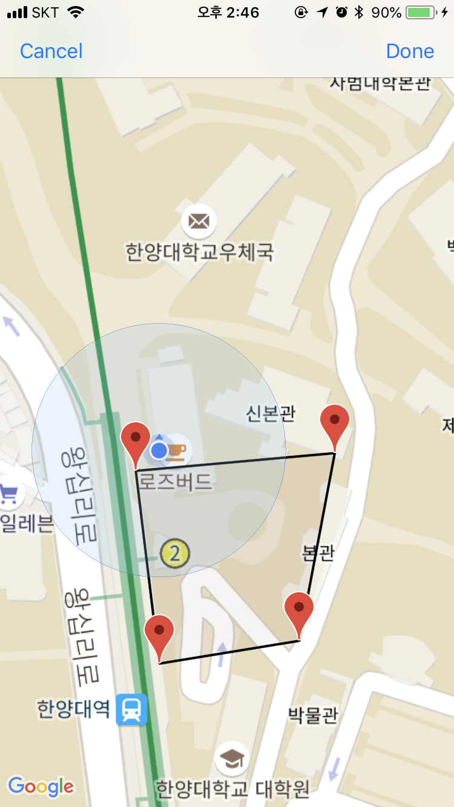
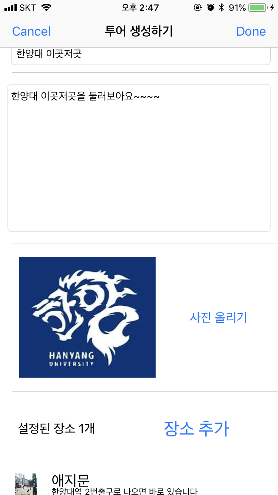

투어 생성
한양대 직원입니다. 한양대를 홍보하기 위해 한양대 여러 장소들을 이용하여 투어를 만듭니다.


기존의 스탬프 투어에서 벗어나, 나의 목적에 맞게 나만의 스토리가 있는 투어를 직접 만들고 전 세계 어디든, 정확히 인증이 되기를 원하는 장소를 설정할 수 있습니다.


내가 원하는 투어를 찾고, 투어정보과 장소정보, 장소위치와 리뷰를 보고 진행여부를 정할 수 있습니다. 지금 당장 진행하는 것이 아니라 나중에 진행하고 싶은 투어는 찜하기로 찜 할 수 있습니다.


투어의 사진과 설명, 장소들의 정보와 위치와 이미 완료한 사람들의 리뷰를 확인할 수 있습니다.


투어에서 설정한 장소들을 직접 찾아가서 인증을 할 수 있습니다. 장소에서 직접 찍은 사진이 나의 스탬프가 되어 방문 소감과 함께 등록을 하게 됩니다. 진행이 완료된 투어는 리뷰를 작성할 수 있습니다.
앱은 다양한 분야에서 쓰일 수 있습니다. 다양한 테마의 좋은 여행 코스들을 공유할 수도 있고, 내가 가고싶은 곳을 저장해 둘 수도 있고, 중학교 수학여행에서도 쓰일 수 있습니다. 그리고 한 지역을 소개하는 곳에도 쓰일 수 있습니다.
한양대 직원입니다. 한양대를 홍보하기 위해 한양대 여러 장소들을 이용하여 투어를 만듭니다.
어떤 대학을 갈 지 고민하는 고등학생입니다. 한양대를 둘러보면서 어떻게 생겼는지 뭐가 있는지를 알기 위해 투어를 진행합니다.